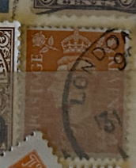
| SOURCE | TITLE| IMAGE MATCH | click to source page |
| Wheeler Antiques | Vintage Royal Army Ordnance Corps "Souvenir Of Egypt 1954" Embroidery — Wheeler Antiques | 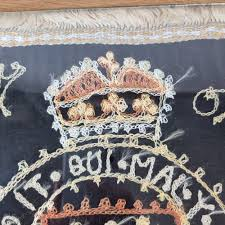 |
| Blogger.com | Big Blue 1840-1940: Angola 1870-77 "Crown" Issue: Spiro Forgeries | 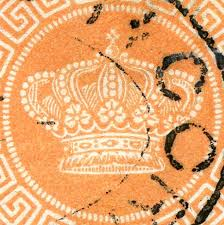 |
| eBay UK | Charles & Diana Wall Hanging Royal Art New OId Stock Carpets Of Worth Axminster | eBay UK | 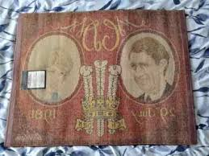 |
| Blogger.com | MINIATURAS MILITARES POR ALFONS CÀNOVAS: BANDERAS BRITANICAS DE CABALLERIA, fuente= Biblioteca Militar de Barcelona. | 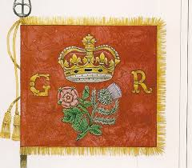 |
| Etsy | Vintage Tammis Keefe Handkerchief 1950s London Guards & Crowns Print 14” X 14" - Etsy Ireland | 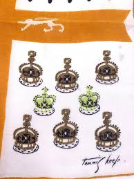 |
| eBay | Caribbean Stamps without Gum for sale | eBay | 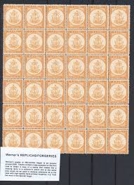 |
| Online Coin Club | Half Penny 1983, Coin from United Kingdom - Online Coin Club | 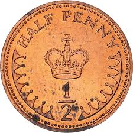 |
| Zaricor Flag Collection | ZFC Item Details - Greece State Flag - Government in Exile. | 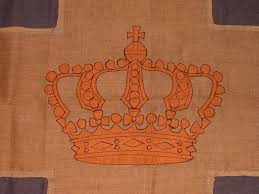 |
| Dave Elsmore | Dave Elsmore RSRM APR | 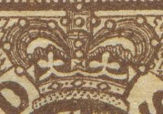 |
| eBay | Circulated World Paper Money 1895 Year for sale | eBay | 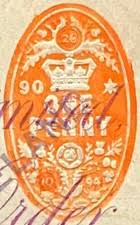 |
| Flickr | Image from page 203 of "Canadian grocer January-June 1908"… | Flickr | 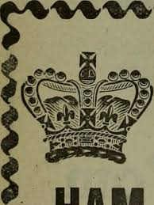 |
| vividagallery.com | Netherlands Indies Queen Wilhelmina Colonial History Orange Portrait Engraving Dutch Empire Metal Print by Vivida Gallery - Vivida Gallery | 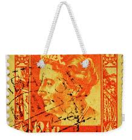 |
| eBay | Ulster Weavers King Charles III Coronation Cotton Tea Towel Ltd Ed - TRAD FLORAL | eBay | 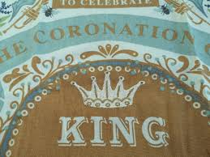 |
| British Empire website | The Grenadier Guards | 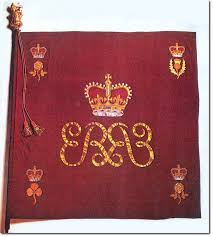 |
| Hermès | Grande Tenue losange - Orange | Hermès Poland | 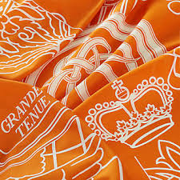 |
| There's Braille on the new £10 note. : r/mildlyinteresting | 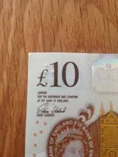 | |
| MutualArt | Eric Ravilious | Guide to the Exhibits in the Pavilion of The United Kingdom and abstract design | MutualArt | 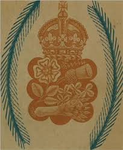 |
| On This Day November 20, 1999: President Bill Clinton Acknowledges U.S. Role in Greek Dictatorship https://pappaspost.com/on-this-day-november-20-1999-bill-clinton-acknowledges-us-role-greek-dictatorship/ | 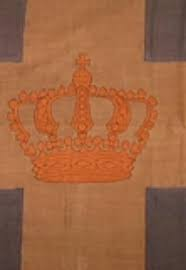 | |
| eBay.de | POSTAGE STAMP DENMARK 4 FOUR SKILLING CROWN SWORD SCEPTRE ORANGE PRINT CC1616 | eBay.de | 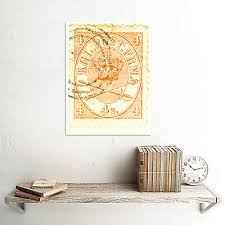 |
| eBay | St Thomas & Prince Islands, Scott #2a, 10r Portuguese Crown, Used | eBay | 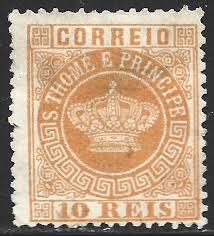 |
| GetArchive | St. Thomas and Prince Islands 1881-85 Sc10 - PICRYL - Public Domain Media Search Engine Public Domain Image | 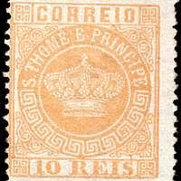 |
| Kerry Taylor Auctions | Lot 29 - A printed silk handkerchief to commemorate | 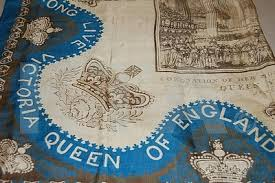 |
| The World of Playing Cards | Gibson's History of England — The World of Playing Cards | 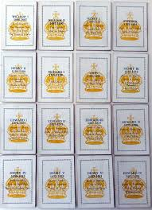 |
| TheGlasgowStory | TheGlasgowStory: Reform Banner | 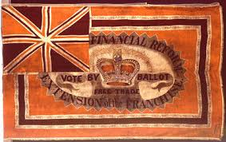 |
| Etsy | Vintage Tammis KEEFE Towel, House Castle Cottage, Mid Century Hanging Textile, Home Sweet Home - Etsy | 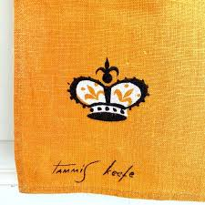 |
| Stamp Forgeries of the World | Forgeries of Danish stamps. 1863. | Stampforgeries of the World | 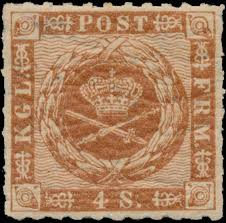 |
| Colnect | Stamp: Queen Elizabeth II & Troodos Forest (Cyprus(Definitive Issues - Queen Elizabeth II) Mi:CY 168a,Sn:CY 172,Yt:CY 160,Sg:CY 177,AFA:CY 168,Un:CY 160 📮 | 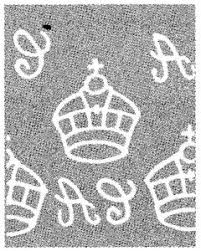 |
| eBay UK | Bedfordshire Times Newspaper King George V Silver Jubilee Souvenir Edition 1935 | eBay UK | 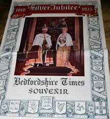 |
| Fairmont Store US | Tea Towel | Empress Royal China | Fairmont Store – Fairmont Store US | 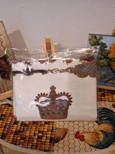 |
| NGC | Great Britain 1/2 New Penny KM 914 Prices & Values | NGC | 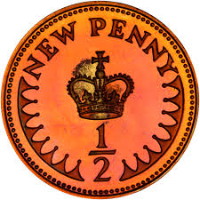 |
| Fine Art America | Crown Royal Wall Art for Sale - Fine Art America | 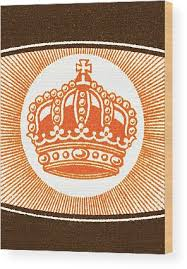 |
| EstateSales.org | LOT:104: Vintage English Royalty Memorabilia Including Royal Staffordshire King George and Queen Elizabeth Plates, Creampetal King Edward Plate and Queen Elizabeth Coronation Ephemera and More | EstateSales.org | 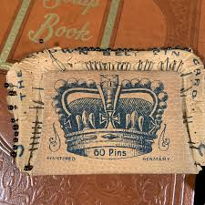 |
| tea-set.org | Ulster Irish Linen | Royal Wedding Princess Diana Prince Charles Tea Towel Set | 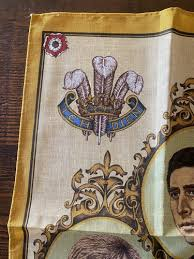 |
| Gumnut Antiques | Australian 1915 4 Penny Orange King George V Stamp OS NSW Perforated – Gumnut Antiques | 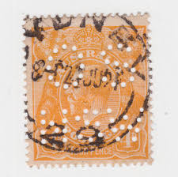 |
| Vincent Guinnane (vguinnane) - Profile | Pinterest | 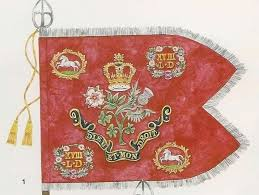 | |
| Blogger.com | MINIATURAS MILITARES POR ALFONS CÀNOVAS: BANDERAS Y ESTANDARTES de la CABALLERIA BRITANICA,1740-1971, fuente =Biblioteca Militar de Barcelona. | 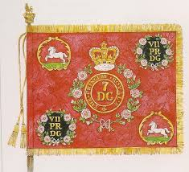 |
| Blogger.com | Stitch Journal: Art Commission For a New Coat of Arms for Western Australia Supreme Court Civil - Guest Post by Maggie Baxter | 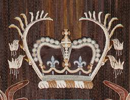 |
| tuckahoelodge347.org | The Canadian Three-Penny Beaver - A Masonic stamp? | 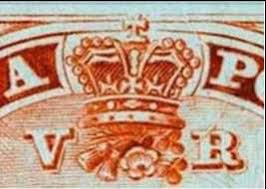 |
| What is the identification of this document with Great Britain embossed duty cut off? | 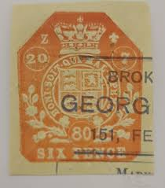 | |
| My great great grandad was interned in the UK during WW2. He made this while interned. My family has no idea what the fabric squares of flags and regiments come from. Any | 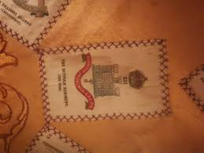 | |
| Etsy | RARE Vintage Unused Linen Commemorative Tea Towel Celebrating the Queen's Silver Jubilee 1952-1977 Royal Family Collectable -guides/brownies - Etsy | 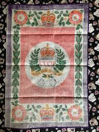 |
| My latest acquisition. I'd bet that someone in this group knows the back story of it's origin. I bought it off eBay from a Canadian dealer. There's some real pretty stamps in | 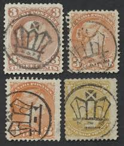 | |
| Etsy | Prince Charles Blend - Etsy Australia | 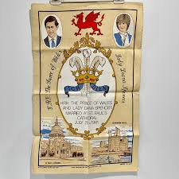 |
| WorthPoint | Rare Prince Charles and Camilla wedding Cake in a PresentationTin | #466418409 | 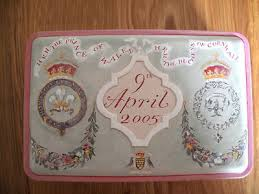 |
| eBay Australia | KGV 1/2d Acsc 68(8)ba,p OS ORANGE SM P13 *FLAW ON LEFT SIDE OF CROWN 8R7* MUH. | eBay Australia | 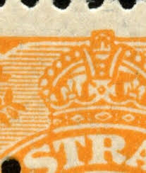 |
| British Empire website | 10th Hussars | 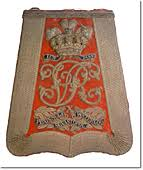 |
| Leland Little Auctions | Her Most Gracious Majesty Queen Victoria Stevengraph (Lot 536 - New Year's Gallery AuctionJan 6, 2018, 9:00am) | 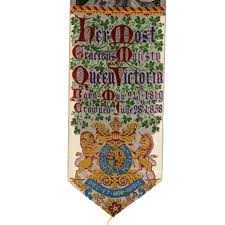 |
| eBay UK | Rank Insignia; Warrant Officer 2, CSM, Light Brown On Desert, 50X55Mm | eBay UK | 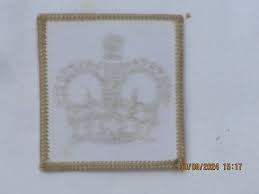 |
| Stamp Community Forum | Danish Classics, Show Them To Me. - Stamp Community Forum | 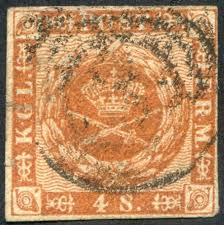 |
| eBay | NUTBROOK STAMPS | eBay Stores | |
| Etsy | Antique 1910s Great Britain Tobacco Felt Flannel Rug Inserts - Tobacciana Collectible - 7 Inches X 4 3/4 In - Etsy | |
| eBay | GB STAMPS - Montserrat 1936-1964 King George VI & Queen Elizabeth II- M.N.H/M.H | eBay | |
| vividagallery.com | Jewish Museum Ritual Ornament Detail Weekender Tote Bag by Vivida Gallery - Vivida Gallery | |
| Are penny red stamps correctly identified? | ||
| ITALY; Early 1900s Imposta Generale Revenue issue | ||
| Blogger.com | Big Blue 1840-1940: Denmark "Royal Emblems" Issues 1851-1863: A closer look | |
| AbeBooks | Marino Faliero, Doge Of Venice. An Historical Tragedy In Five Acts. With Notes - The Prophecy Of Dante, A Poem [bound With] The Island, Or Christian And His Comrades. [Queen Adelaide's Copy | |
| Coin Community | PCGS & Collectors Universe Damaged My Coins - Coin Community Forum | |
| 17 Stamp collecting ideas | stamp collecting, stamp, postage stamps | ||
| eBay | Bavarian Cats Used German & Colonies Stamps for sale | eBay |